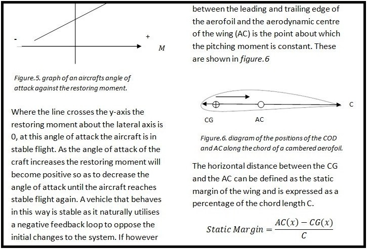

Martian Reconnaissance Aircraft
Research
Feb 2021 - May 2021 . 3 mo
Conducted an investigative design study in order to analyse the practical feasibily of a fixed wing martian aerial reconnaissance vehicle. Economic, social and policy related contraints were not considered in this study, the intent was soley to detrmine whether or not such an aircaraft could be developed using current technology.
The study followed the following form, research into martian condtions, an analysis of the vehicles predicted requirements, research into current technological solutions to meet these demands and a rough consideratioin of the technolgies implementation and integration.
The research concluded that the design would be physically possible, however it would be required to surmount an incredibly challenging enginnering problem, mostly due to the high flight speed required to sustain lift in the thin martian atmosphere.
